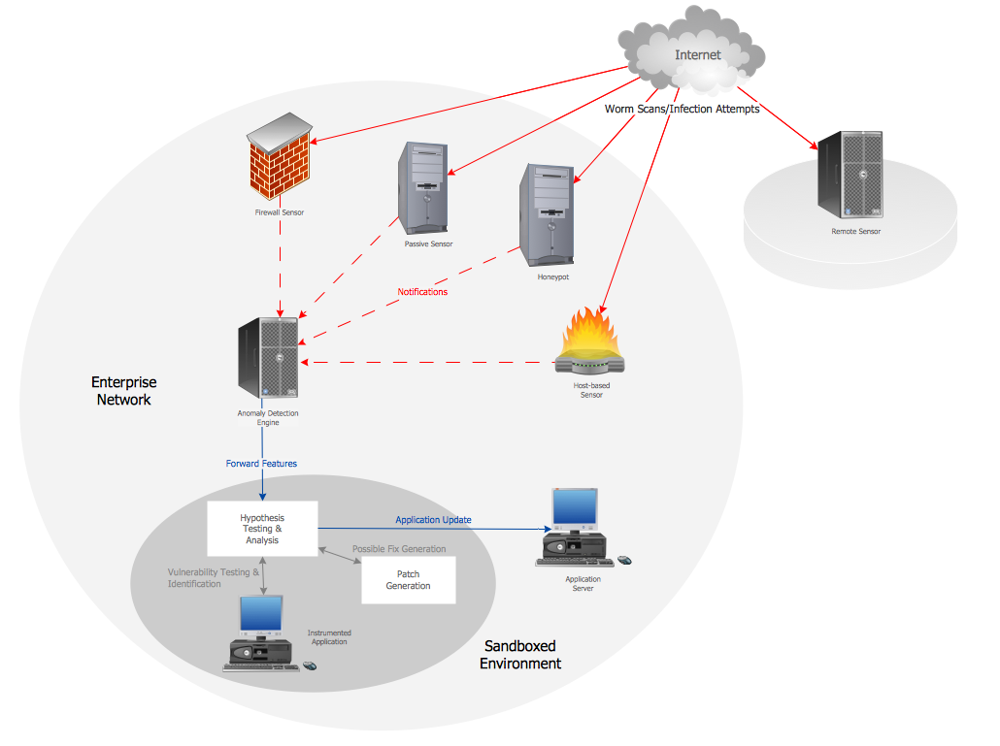

petsIntroduction
Network topology is the layout or organizational hierarchy of interconnected nodes of a computer network. Different network topologies can affect throughput, but reliability is often more critical. With many technologies, such as bus networks, a single failure can cause the network to fail entirely. In general the more interconnections there are, the more robust the network is; but the more expensive it is to install.[1]
A computer network is a set of computers connected together for the purpose of sharing resources. The most common resource shared today is connection to the Internet. Other shared resources can include a printer or a file server. The Internet itself can be considered a computer network.[2]
starApplications
Structure design is required for any computer network whether it is office or home network. We make network structure design before installing and connecting the hardware and software. We gather requirements and make a plan to avoid from future issues and shape a secure and reliable computer network. Network design is made according to the type and size i.e. home or small business or large enterprise. We install hardware including switches, data cabling, equipment setup like modems, routers and other devices.[3]

starResearch at UCL
Structure fundamentally affects function. We characterise network structures, study the relation between structures and critical properties such as network resilience, efficiency and security, and model the evolution of networks.
extensionOther Research
Network structure in virtual organizations: Many networks of interest in the sciences, including social networks, computer networks, and metabolic and regulatory networks, are found to divide naturally into communities or modules. The problem of detecting and characterizing this community structure is one of the outstanding issues in the study of networked systems. [4]
Modularity and community structure in networks: Virtual organizations that use email to communicate and coordinate their work toward a common goal are becoming ubiquitous. However, little is known about how these organizations work. Much prior research suggests that virtual organizations, for the most part because they use information technology to communicate, will be decentralized and non-hierarchical. This paper examines the behavior of one such organization.[5]
castReferences
- En.wikipedia.org. Computer network. [online] Available at:wilipedia.
- Study.com. What is a Computer Network? - Types & Definition - Video & Lesson Transcript | Study.com. [online] Available at:http://study.com/academy/lesson/what-is-a-computer-network-types-definition-quiz.html
- Geeksnerds.co.uk. Computer Network Structure - Design and Implementation. [online] Available at:http://www.geeksnerds.co.uk/it-support/computer-network/
- Ahuja, M. and Carley, K. Network Structure in Virtual Organizations.http://onlinelibrary.wiley.com/doi/10.1111/j.1083-6101.1998.tb00079.x/full
- Newman, Modularity and community structure in networks.http://www.pnas.org/content/103/23/8577.short